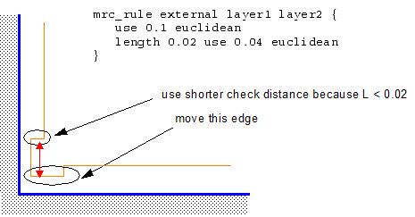
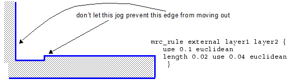
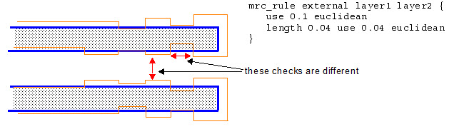
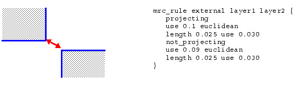
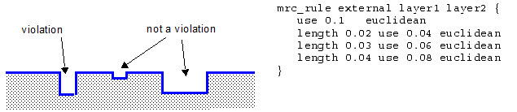

mrc_rule
Used to create external and internal spacing constraints.
Usage
mrc_rule {external | internal | enclosure}
layer1 [{inside | outside | not_inside | not_outside} reglayer] [horizontal | vertical]
[layer2 [{inside | outside | not_inside | not_outside} reglayer] [horizontal | vertical]] ‘{’
[[projecting [dist] | not_projecting [dist]]
use d1 {metric | d2}
[{length len use d1 {metric | d2}}...]]...
‘}’
Arguments
- external | internal | enclosure
A required argument that specifies the check type. These allow specific mask constraint rules to be applied to fragments between two layers. Any opc, correction, and visible layers can be used.
By default, layers defined on the same mask will always be compared using the MRC rule that applies. When layer1 and layer2 are layer names, the rule is applied to polygon edges, which may consist of multiple fragments or be equal to a single generated jog between two fragments.
The enclosure rule restrains fragment movement if it violates the specified enclosure rule. For example:
mrc_rule enclosure enclosed_frags enclosing_layer { use num ... }where:
enclosed_frags — Contact or via layer fragments that are enclosed by the enclosing layer.
enclosing_layer — The enclosing layer fragments.
use num — Measures the enclosure between enclosed_frags and enclosing_layer.
- layer1
A required argument that specifies the first layer of the check. You can optionally specify a region of layer1 or direction of edges for which this MRC rule is valid.
- layer2
An optional argument that specifies the second layer of the check. If not specified, the first layer is also used as the second layer. You can optionally specify a region or direction of edges.
Note:When using several mrc_rule statements, the last statement in the sequence should not include an inside, not_inside, outside, not_outside, horizontal, or vertical declaration.
- {inside | outside | not_inside | not_outside} reglayer
An optional argument that restricts the region of layer1 or layer2. Only one of inside, outside, not_inside, and not_outside can be specified. Only fragments whose shapes are completely inside, completely outside, completely “not inside,” or completely “not outside” the shapes on reglayer are used for the check. Collinear edges are considered to be both not inside and not outside.
- horizontal | vertical
An optional argument that restricts the check to considering only the horizontal or vertical edges on the layer.
- projecting [dist]
An optional keyword that instructs Calibre to measure the separation between two edges only when one edge projects onto the other edge.
When specifying both projecting and not_projecting, do not specify a rule without one or the other. For example, the first rule in the following example conflicts with the other two, which can cause violations:
mrc_rule external m1 { use 0.0750 projecting use 0.0825 opposite not_projecting use 0.0725 euclidean length 0.032 use 0.025 }The following does not produce conflicts:
mrc_rule external m1 { projecting use 0.0825 opposite not_projecting use 0.0725 euclidean length 0.032 use 0.025 }You can optionally specify a projection distance limit (dist). Generally, dist should be less than or equal to fragment_min. If the projecting distance is less than or equal to dist, then the fragment is considered not projecting. Note that the following example:
mrc_rule ...{ projecting 0.01 ... not_projecting ... }is equivalent to:
mrc_rule ...{ projecting ... not_projecting 0.01 ... }and they both mean that the common projecting length should be strictly larger than 0.01 for the edges to be considered projecting.
- not_projecting [dist]
An optional keyword that instructs Calibre to measure the separation between two edges only when neither edge projects onto the other edge. You can optionally specify a projection distance limit (dist).
Note:Using metrics other than euclidean with not_projecting can cause inconsistencies, as discussed in “OPC Output Consistency”.
- use d1 {metric | d2}
A required argument that specifies the minimum distance to allow for the rule. The body of the mrc_rule must contain at least one use argument.
Distances that are not violations are >= d1. The value for d1 is required and is the default value used if none of the length-constraint rules apply (specified by either metric or d2). You must specify either metric or d2.
The possible values for metric are euclidean, opposite, and square. euclidean is recommended.
When d2 is specified, it implies opposite extended with d2 as the extension value.
The following figure shows the measurement regions created for each of the different metrics, and the dimensions used with each.
Figure 1. The Four Metrics
- length len
An optional keyword that specifies a maximum length criteria, len. The use argument is applied only when the shorter of the two edges being compared is less than or equal to len.
Description
The mrc_rule command block allows you to specify external and internal constraint checks between layer fragments based on the distance between fragments as well as fragment length. Multiple mrc_rule checks can be defined in a litho setup file; by default, when multiple checks apply to a situation the most constrained rule applies. This can be changed with mrc_rule_priority.
For better performance and consistency, use region layers, smaller values, and length-based Euclidean checks.
The rules establish conditions to find edges for correction (or to prevent correction in certain cases). If an mrc_rule “passes”, then the edges are classified by the constraint.
For example, if you set up a rule check to identify a set of edges as a jog, typically you do not want corrections to be applied to those edges to make the jog even larger. So if the rule passes, then the edges are flagged as a jog and OPC does not move the edges out. In another case, you want to move the edges outward when length constraints are met. When the check passes, OPC moves the edges as a result of the rule.
If you have multiple “projecting” rules, you can preface each with the keyword “projecting” for clarity. Note that there can be only a single “not projecting” keyword.
Examples
The mrc_rule command block allows the flexibility to perform a internal and external check operations for a variety of unique situations.
One-Layer Constraint
The following is a simple one-layer constraint example:
mrc_rule m1 { use 0.0525 }When length is specified, it is applied to edges with length <= to the input value.
mrc_rule external m1 { use 0.0525
length 0.032 use 0.025
length 0.002 use 0
}Two-Layer Constraint
The mrc_rule command can be used to control spacing to SRAF layers. The following example uses length to set a rule for SRAF ends.
mrc_rule external m1 sraf { use 0.0725
length 0.040 use 0.06
}Area Constraints
The mrc_rule allows you to specify rules for specific areas. Marker layers are used to define regions. Valid choices are inside, not_inside, outside, not_outside. The marker layers are hidden type.
mrc_rule external poly not_outside SRAM_MARKER {
use 0.060
length 0.025 use 0.030
}
mrc_rule external poly outside SRAM_MARKER {
use 0.065
length 0.025 use 0.030
}Moving an Edge From a Concave Corner
The following example allows an edge at a concave corner to move outwards.

Jogs
In this example, a rule is set to ignore a small jog on the input layout when preventing an edge from moving during OPC.

Notches and Feature-To-Feature Checks
In the following example, a distinction is made between notches and feature-to-feature checks.

Corner-to-Corner Checks
The not_projecting option can distinguish features such as corner-to-corner checks, which are not projecting onto each other, as in the following example.

Stair-Stepping
The following example implements a “stair-stepped aspect ratio” of 2:1 when features are below a certain size.
